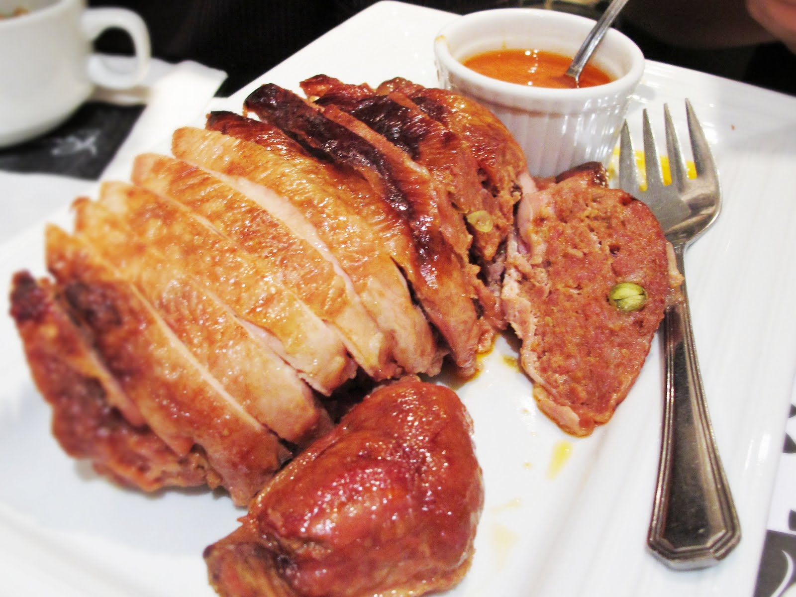

Chicken Relleno Recipe

Video Tutorial: Chicken Relleno Recipe Video
Chicken Relleno is a stuffed chicken delicately seasoned and baked to perfection. Here's how to make it:
Ingredients:
- 1 whole chicken (about 2-3 lbs)
- 1/2 cup raisins
- 1/2 cup diced ham
- 1/2 cup diced carrots
- 1/2 cup diced potatoes
- 1/4 cup pickle relish
- 1/4 cup grated cheese
- 3 cloves garlic, minced
- 1 onion, chopped
- 2 tablespoons soy sauce
- 1 tablespoon lemon juice
- 1 teaspoon ground black pepper
- 1 teaspoon salt
- 1/4 cup cooking oil
Instructions:
- Preheat oven to 375°F (190°C).
- In a large bowl, combine raisins, ham, carrots, potatoes, pickle relish, cheese, garlic, onion, soy sauce, lemon juice, black pepper, and salt. Mix well to create the stuffing.
- Clean the chicken and remove the backbone (spatchcock). Lay it flat, skin-side down, on a clean surface.
- Spread the stuffing mixture evenly over the chicken, leaving some space around the edges.
- Roll the chicken tightly to enclose the stuffing, making sure the skin is on the outside.
- Tie the rolled chicken securely with kitchen twine to hold its shape.
- Heat cooking oil in a large skillet over medium-high heat.
- Sear the chicken on all sides until golden brown.
- Transfer the seared chicken to a baking dish and bake in the preheated oven for 1 to 1.5 hours, or until the internal temperature reaches 165°F (75°C).
- Remove from the oven and let it rest for a few minutes before slicing.
- Serve hot and enjoy!